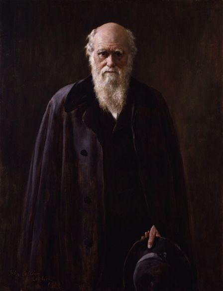

Your local biology club
Raptor is here to embrace your child’s interest in biology and natural sciences. We organize lectures, educational games, and laboratory experiments for children of different ages. Raptor is available all year round to support curiosity and knowledge.

Why choosing biology?
 Today everyone knows Carl Linnaeus, Charles Darwin, Gregor Mendel Even though biology is one of the oldest subjects, it’s still full of mysteries. Some people believe it may be the most important science, as her main focus is the life itself. Biology is a perfect area to learn the scientific method, which could be beneficial in all aspects of academic and professional life. It also helps to sharpen critical thinking and get to know how things work. Human progress heavily depends on biological findings. Your child will be able to build a career in biochemistry, medicine, or ecology. And besides, it is just exciting and fun!
What we offer?
We try to provide an individual approach to every child supporting their ideas and aiming to develop creativity. Our goal is to flourish problem-solving skills using outside-the-box thinking. Raptor also teaches children how to be team players and develop their communication skills. Frequent contact with nature not only contributes to enhanced cognitive skills but also deepens our empathy. Not to say that our challenging outdoor and indoor activities help young people to find friends for life!